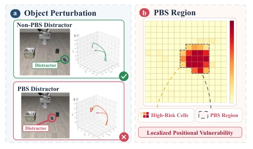
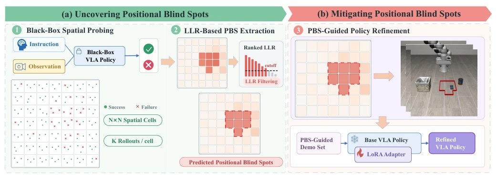

This paper pours cold water on VLA models. Everyone thought that increasing the average success rate was everything, but the authors found that just moving an irrelevant object could cause the model to fail catastrophically. The authors proposed the concept of "Position Blind Spot (PBS)," which is quite vivid. Methodologically, they used grid discretization plus statistical testing to find pitfalls, and then used LoRA to fill them. Although the results look good, with the failure rate dropping by nearly half, it relies on manual teleoperation for data collection, isn't this cost a bit high? Moreover, black-box testing is not as thorough as white-box analysis, but for engineering deployment, this "fix where it breaks" approach is indeed smarter than blindly full-scale retraining.
Existing VLA evaluations primarily rely on benchmarks such as LIBERO [8] or VLA-Arena [22], focusing on average success rates under fixed task configurations. This evaluation implicitly assumes uniform spatial capabilities in the model, whereas in reality, object positions vary continuously. Although literature [10]-[13] has investigated robustness, it predominantly focuses on appearance, language, or adversarial perturbations, overlooking systematic failures induced by variations in task-irrelevant object positions. Such "Position Blind Spots" can lead to unexpected failures during deployment, potentially compromising safety. Therefore, efficiently identifying these spatial vulnerabilities and addressing them specifically is crucial for enhancing VLA reliability.

Fig. 2. Impact of distractor position on VLA task success.
The framework consists of two stages. Stage 1 "Blind Spot Mining": The workspace is discretized into an N×N grid, where uniform sampling and rollout execution are performed within each cell, recording success/failure outcomes. A one-sided Log-Likelihood Ratio (LLR) test is utilized to compare the difference between cell failure rates and the overall workspace failure rate, screening out cells with significantly elevated risk as PBS regions. Specifically, if a cell's failure rate is significantly higher than the global mean, the LLR score is high, and the Top-M cells are selected based on this ranking. Stage 2 "Blind Spot Mitigation": Within the identified PBS regions, successful demonstration trajectories are collected via manual teleoperation to construct a PBS-guided demonstration dataset. Finally, LoRA is used to fine-tune the original policy, updating only adapter parameters while preserving the original observation and action interfaces. The entire process requires no access to internal model gradients, constituting black-box optimization. This method avoids full-scale retraining, focusing instead on data augmentation in high-risk areas.

Fig. 3. Pipeline of the proposed framework for uncovering and mitigating Positional Blind Spots (PBS).
实验Experiments
在 LIBERO 和 VLA-Arena 两个基准上测试了 π0, π0.5, OpenVLA-OFT, UniVLA, VLA-Adapter 等 5 个 VLA 模型。结果显示 PBS 普遍存在，失败率最高达 0.58，且空间分布集中。提出的搜索策略在 F1 分数上优于随机搜索和自适应采样基线，平均提升显著。经过 PBS 引导的微调，整体失败率降低了 40%-85%，LLR 显著下降，Moran's I 也降低表明空间聚集性减弱。消融实验表明 7×7 网格效果最佳，单次微调即可覆盖大部分漏洞。此外，微调后的模型在未见基准 VLABench 上 SR 和 IS 指标也有提升，证明方法具有泛化性。
Five VLA models, including π0, π0.5, OpenVLA-OFT, UniVLA, and VLA-Adapter, were tested on two benchmarks: LIBERO and VLA-Arena. Results indicate that PBS is ubiquitous, with failure rates reaching up to 0.58, and the spatial distribution is concentrated. The proposed search strategy outperforms random search and adaptive sampling baselines in terms of F1 score, showing significant average improvement. After PBS-guided fine-tuning, the overall failure rate decreased by 40%-85%, LLR decreased significantly, and Moran's I also decreased, indicating reduced spatial clustering. Ablation experiments demonstrate that the 7×7 grid yields the best results, and a single fine-tuning session can cover most vulnerabilities. Furthermore, the fine-tuned model also showed improvements in SR and IS metrics on the unseen benchmark VLABench, demonstrating the method's generalization capability.